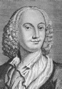

Venedikli bir kemancının hasta çocuğu olarak doğan Antonio Vivaldi (1678-1741), 1703’te ruhban okuluna girdi. Çok hızlı bir şekilde bir keman hocası, bir şef ve Pio Ospedale della Pieta’da yetim kızlara yönelik bir Venedik konservatuarında yatılı kalan bir besteci oldu. Genç kadınlar sıkı bir müzik eğitimi alırlardı ve Vivaldi’nin genellikle kendi orijinal eserlerinden oluşan konserleri, şehrin müziksever dinleyicilerince çok popülerdi.

Vivaldi, ömrü boyunca, tanınmış herhangi bir besteciden daha fazla, 500’ün üzerinde konçertoya imza atarak, insanı şaşkına çevirecek bir üretkenlik sergiledi. Vivaldi vokal eserler bestelemesine rağmen, parçalarının çoğu enstrümantaldir ve en çok da bu alanda ün yapmıştır. Son derece güzel bir etkileyiciliğe sahip olan konçertoları, incelikli hüzünden heybetli coşkuya uzanan bir dizi duyguyu içinde barındırır.
Vivaldi’nin eserlerinin çoğu bir hikâyeyi anlatan, bir duyguyu çağrıştıran veya genelde doğal döngüdeki gerçek hayattan olayların bir izlenimini veren bir program niteliğindeydi. Konçertolar çoğunlukla üç bölümden oluşuyordu: bir allegro (canlı tempo) bölüm, aynı veya benzer bir tonda yavaş bir bölüm ve ilkinden bile daha canlı olabilen son bir allegro bölüm.
Vivaldi’nin “Gece”, “Denizdeki Fırtına” ve “Sakakuşu” gibi besteleri arasında en ünlüsü, bugün klasik Batı müziğinin en popüler eserlerinden biri olarak kolayca hafızalarda yer eden ve dört konçertoluk bir diziden oluşan “Dört Mevsim”dir. Bu ve diğer parçalarıyla Vivaldi, solocunun rolüne olağanüstü bir drama ve gösteriş duygusuyla benzeri görülmemiş bir önem yükleyerek devrim yapmıştır. Vivaldi, aynı zamanda Johann Sebastian Bach ve klasik dönem bestecileri üzerinde, hatırda kalan temaları, maceracı ritmik motifleri ve bestelerinin duruluğuyla büyük bir etki bırakmıştır.
EK BİLGİLER:
1. Vivaldi’nin çoğu elyazmasının başında, “Laus Deo Beataeque Mariae Deiparae Amen” sözlerinin bir kısaltması yer alıyordu. Bu ifade, “Tanrı’nın ve Kutsal Meryem’in (Tanrı’nın anası) Onuruna” anlamına gelir.
2. Vivaldi’nin hayatının bir noktasında, o zamanlar bir müzisyen için ödenen en yüksek maaşlardan birini aldığı, bir yılda 50.000 duka altını kazandığı biliniyor.